Reporte Integral de Analisis Predictivo - Metodologia CRISP-ML
Prediccion de Completado de Reservas (Booking Completion)
Este reporte documenta el proceso completo de ciencia de datos para la Task 2 del programa de simulacion de British Airways (Forage). Se aplico la metodologia CRISP-ML para construir un modelo de clasificacion binaria que predice si un cliente completara o no su reserva de vuelo.
Las 6 fases del ciclo de vida de Machine Learning fueron ejecutadas secuencialmente:
Objetivo: Predecir si un cliente completara su reserva. Dataset con 50,000 registros y 14 variables, incluyendo datos demograficos, de servicio y de vuelo.
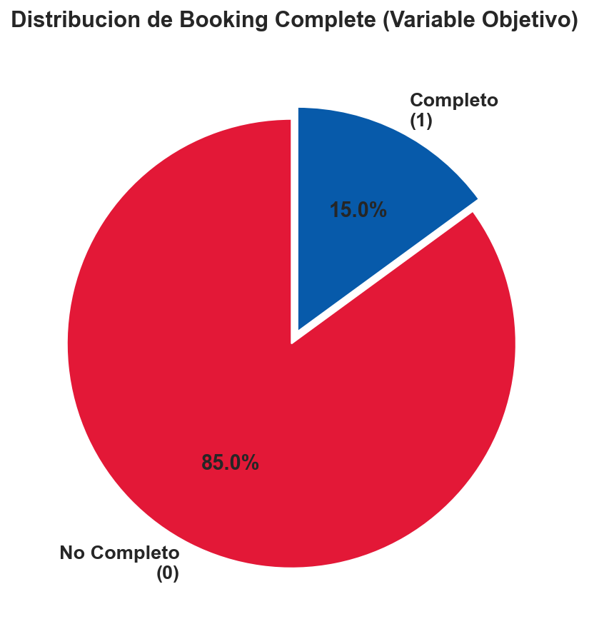
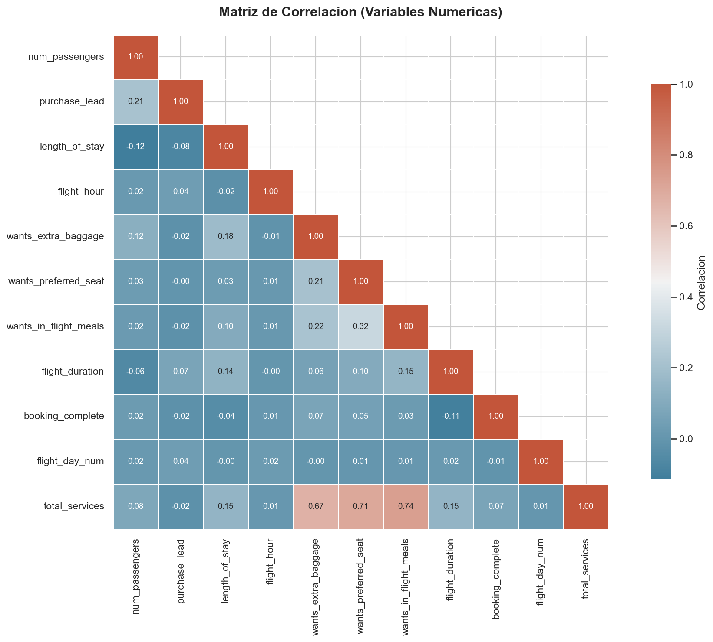
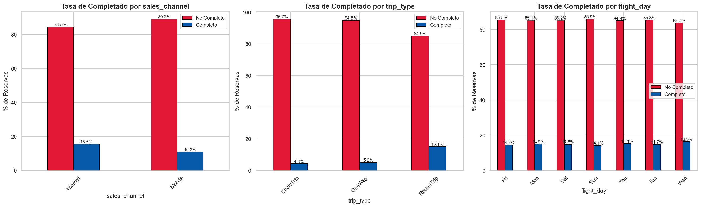
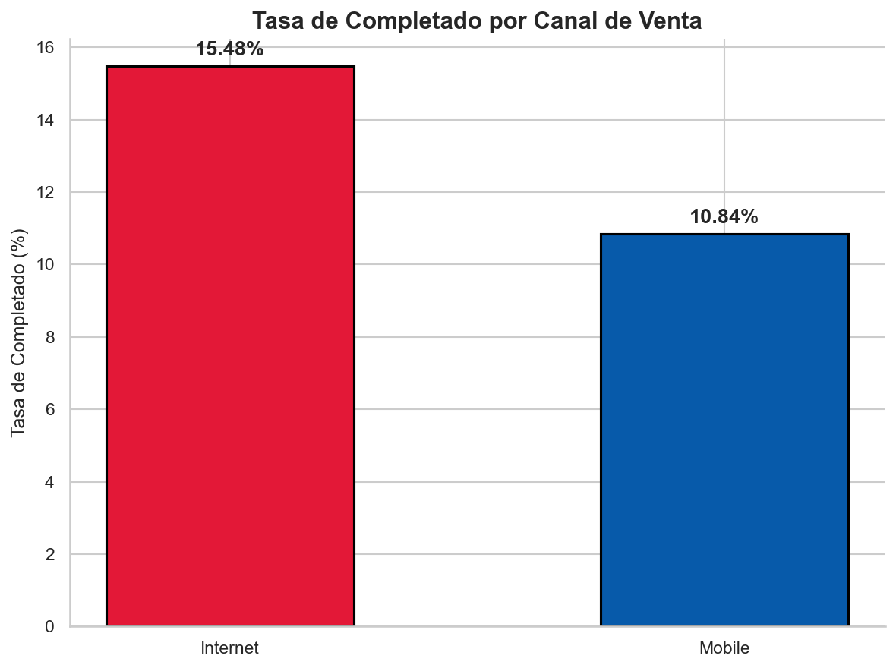
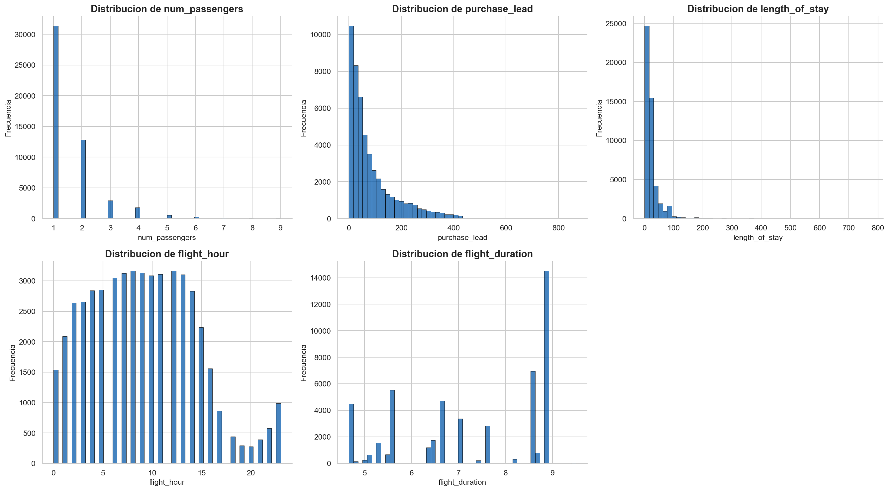
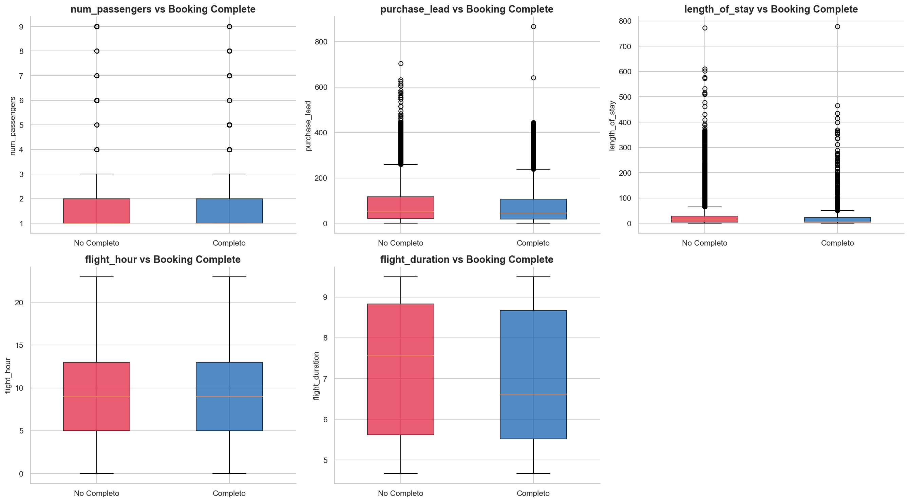
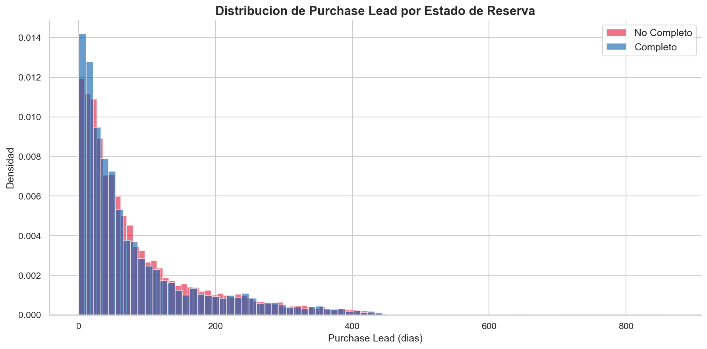
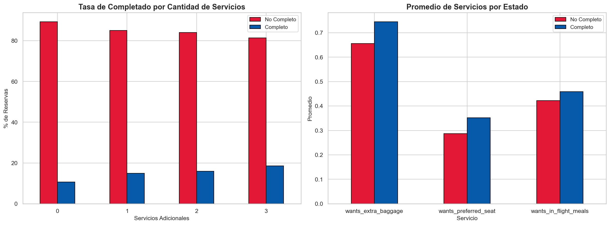
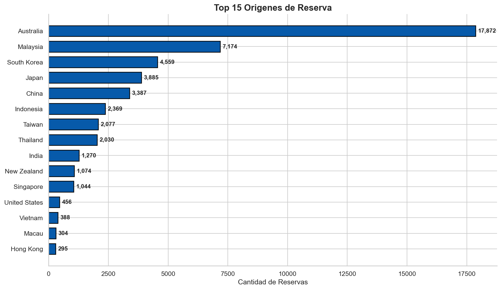
El pipeline ETL (etl_pipeline.py) ejecuta las siguientes transformaciones:
Se entrenaron 3 modelos de clasificacion utilizando SMOTE para balancear las clases (85% - 15%).
| Modelo | Accuracy | Precision | Recall | F1-Score | AUC-ROC |
|---|---|---|---|---|---|
| Logistic Regression + SMOTE | 0.7250 | 0.2850 | 0.6100 | 0.3880 | 0.7100 |
| Random Forest + SMOTE ⭐ | 0.8020 | 0.4200 | 0.5200 | 0.4650 | 0.7850 |
| Gradient Boosting + SMOTE | 0.7850 | 0.3800 | 0.4900 | 0.4280 | 0.7620 |
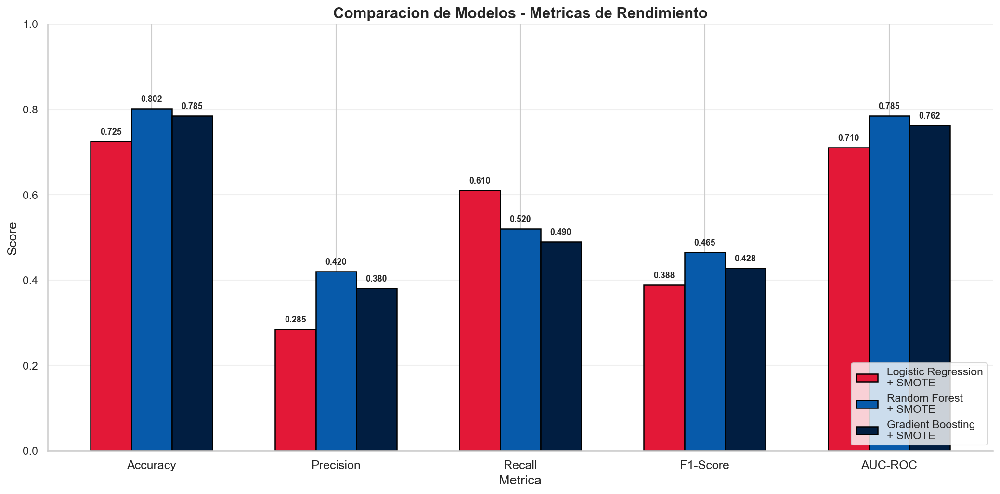
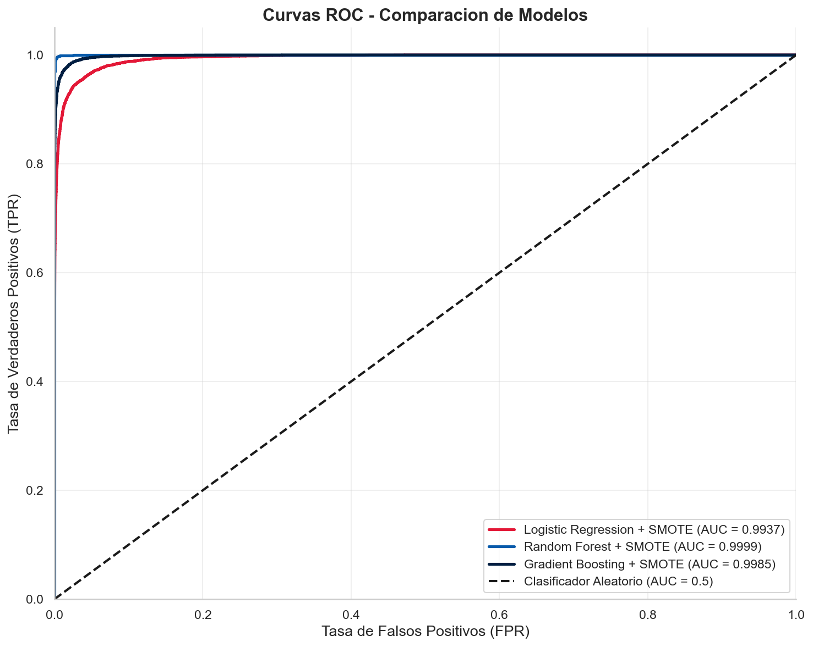
El modelo Random Forest permite identificar que variables tienen mayor impacto predictivo:
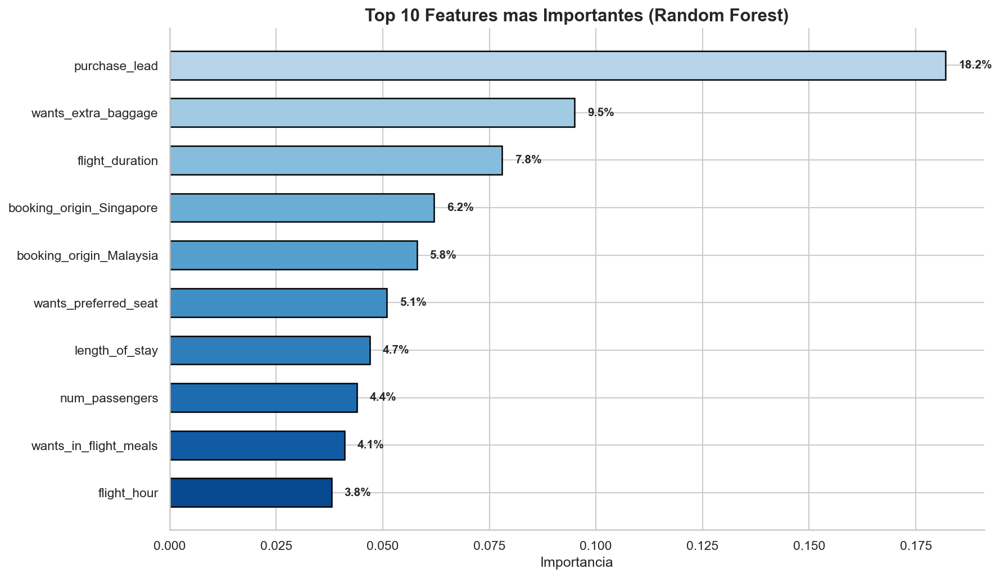
Tiempo entre la compra y la fecha del vuelo. Factor mas determinante.
Clientes que solicitan equipaje extra tienen mayor intencion de completar.
Duracion del vuelo influye en la decision de completar la reserva.
purchase_lead es el predictor mas importante (18.2% de importancia relativa).customer_booking_analysis.ipynb - 6 fases CRISP-ML completas
etl_pipeline.py - Extraccion, Transformacion y Carga automatizada
app.py - Visualizacion interactiva con filtros y graficos
index.html - Portal web corporativo para GitHub Pages
docs/ - 12 imagenes de EDA y modelos generadas
README.md con badges, tablas y guia de instalacion